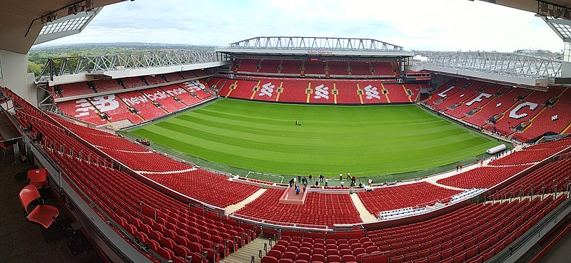

Od początku swego istnienia Liverpool rozgrywa swoje mecze domowe na tym samym stadionie.
Stadion The Reds, Anfield Road, początkowo o pojemności ok. 20 tys. miejsc, został zbudowany w 1884 roku w pobliżu liverpoolskiego Stanley Park. Jego właścicielem był John Houlding,
a przez pierwsze lata istnienia swoje spotkania rozgrywał na nim Everton F.C. Jednak w 1892 roku po sporze z właścicielem stadionu,
Everton F.C. przeniósł się na pobliski Goodison Park.
W tym samym roku mecze na Anfield zaczął rozgrywać nowo powstały klub Liverpool F.C
